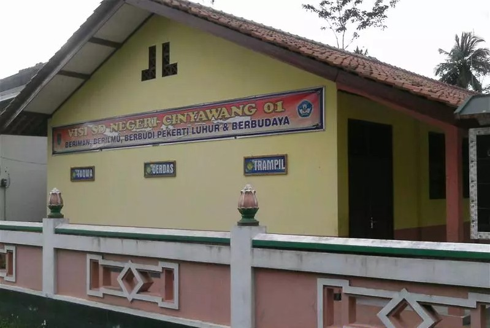
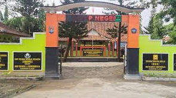

Menyelesaikan pendidikan dasar dengan fokus pada pembelajaran umum dan pengembangan keterampilan dasar. Aktif mengikuti kegiatan pramuka.

Menyelesaikan pendidikan menengah pertama dengan fokus pada pengembangan akademik dan keterampilan dasar. Aktif mengikuti organisasi OSIS sebagai ketua seksi budi pekerti. Kemudian mengikuti ekstrakurikuler basket dan mewakili sekolah di perlombaan basket tingkat kecamatan.

Mengembangkan kemampuan analisis, pemecahan masalah, serta pemahaman konsep ilmiah melalui pembelajaran sains. Mengikuti organisasi IPA sebagai ketua seksi keamanan serta aktif mengikuti ekstrakurikuler basket.
Mempelajari konsep perancangan dan pengelolaan sistem informasi, analisis bisnis, serta pengembangan aplikasi berbasis teknologi. Memiliki pengetahuan dalam database management, analisis kebutuhan sistem. Aktif Mengikuti Organisasi kampus Generation Of Informasion System. Mata kuliah yang relevan meliputi Manajemen Rantai Pasok, Rekayasa Proses Bisnis, Basis Data, Pengembangan Aplikasi Web, Konfigurasi dan Implementasi ERP serta Data Warehouse & Business Intelligence
Mendalami bidang manajemen dengan fokus pada perencanaan strategis, pengambilan keputusan bisnis, serta pengelolaan sumber daya organisasi. Memiliki pemahaman dalam analisis keuangan, pemasaran, dan manajemen operasional. Selama masa studi, mengerjakan berbagai studi kasus yang berkaitan dengan pengembangan strategi bisnis serta peningkatan kinerja perusahaan. Mendapatkan gelar cumlaude dalam menyelesaikan studi dengan IPK 3.92. Mata kuliah yang relevan meliputi Advanced Marketing Management, Advanced Financial Management, HR Management serta Leadership & Organizational Behavior